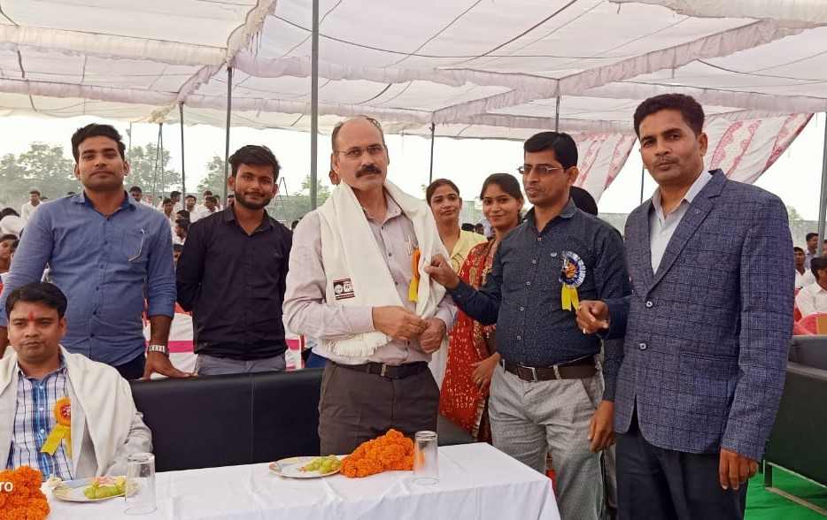
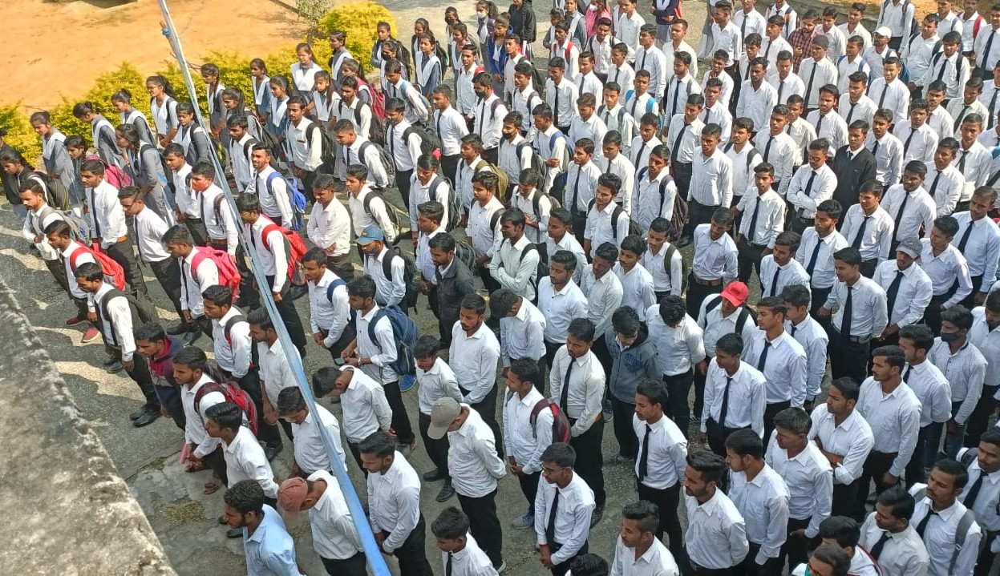
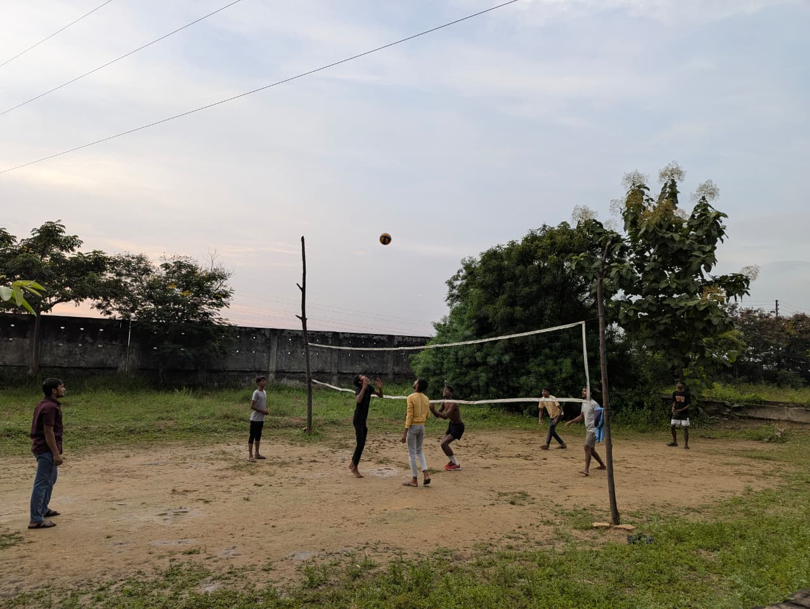

Establishment & Affiliation
Established in 2016, Government Polytechnic Chopan, Sonbhadra, is a premier government institution dedicated to technical education. The institute functions under the affiliation of the Board of Technical Education, Uttar Pradesh, Lucknow (BTEUP) and is approved by the All India Council for Technical Education (AICTE), New Delhi.
Academic operations initially commenced at the campus of Government Polytechnic Sonbhadra, Lodhi, Robertsganj, before developing its own independent identity and modern campus in Chopan.

Diploma Engineering Programs
The institute offers three core diploma programs:
- Computer Science and Engineering
- Electronics Engineering
- Automobile Engineering
with a strong commitment to providing quality technical education aligned with industry requirements and national development goals.

Holistic Development & Co-Curriculars
Beyond academics, Government Polytechnic Chopan actively fosters co-curricular engagement through sports, cultural events, and social service activities.
This holistic approach helps nurture innovation, discipline, and social responsibility, ensuring students are prepared for meaningful careers as well as lifelong learning. With its focus on excellence, inclusivity, and practical learning, Government Polytechnic Chopan has established itself as one of the most respected polytechnic institutions in Uttar Pradesh.

Institutional Committees & Cells
Governance cells maintaining student welfare, safety, and academic quality